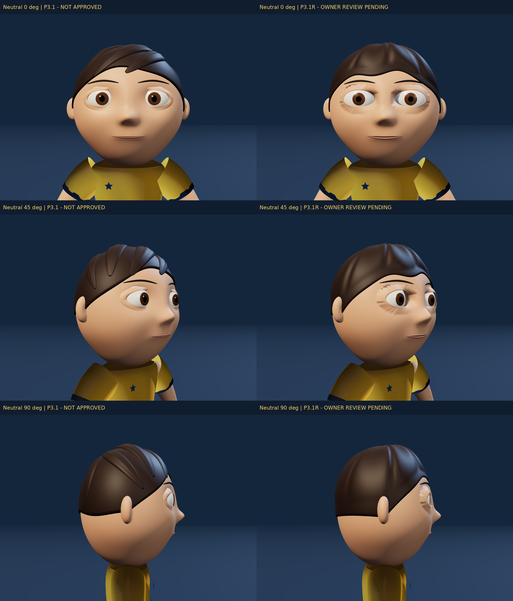
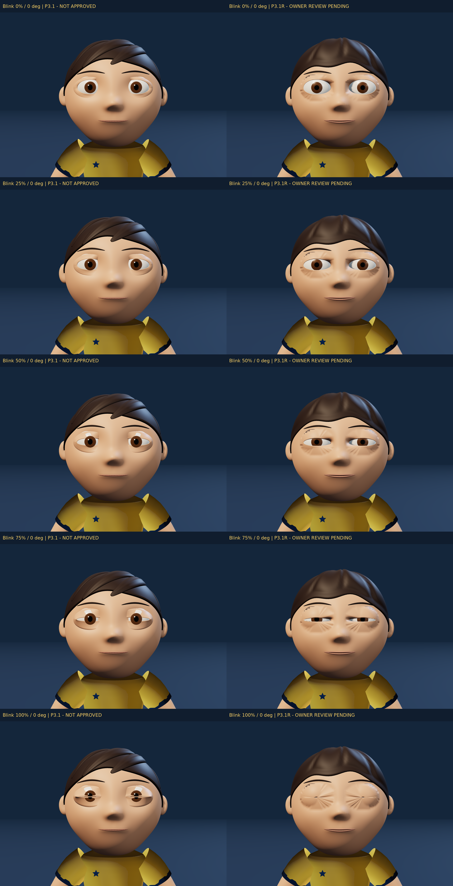
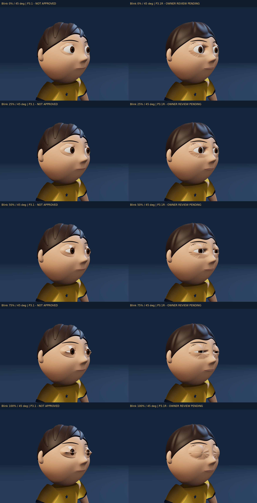
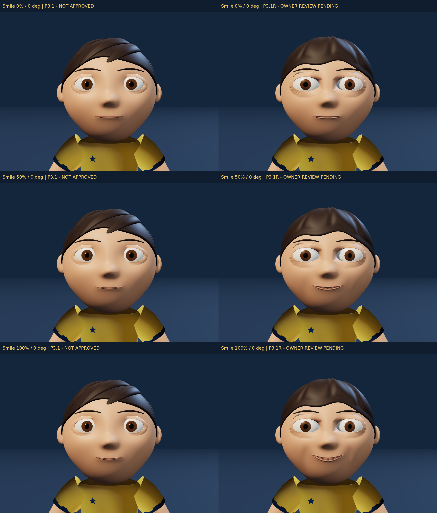
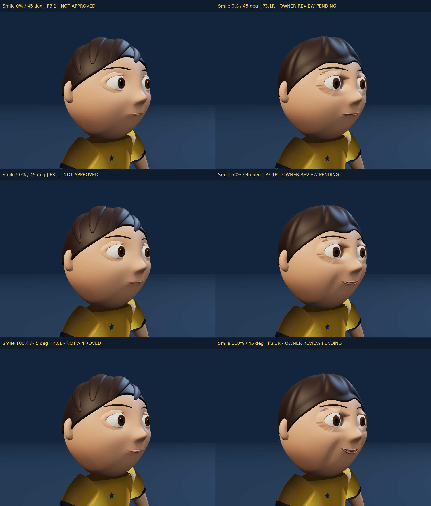

Blender · GLB · Báo cáo · Gates · Ngân sách





Ảnh thật từ GLB dưới studio/camera cố định. PNG ghép giữ nguyên pixel từng ảnh; mở ảnh để zoom. ID diagnostic ở renders/webkit, không dùng làm beauty render hoặc hiệu năng iPhone.